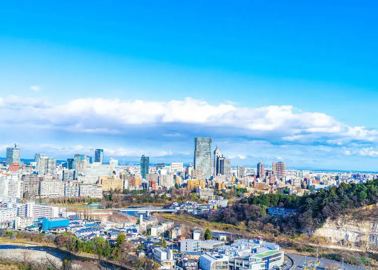

Sendai
Sendai est la capitale de la préfecture de Miyagi et la plus grande ville de la région du Tohoku, située au nord de l’île principale Honshu au Japon. Avec plus d'un million d'habitants, la métropole est un important centre économique et culturel, facilement accessible en Shinkansen depuis Tokyo.
Tristement célèbre pour avoir été frappée de plein fouet par le séisme du 11 mars 2011 et le tsunami qui a suivi, en particulier du côté de son aéroport, la ville possède pourtant de nombreux atouts. Sendai s'avère en effet particulièrement riche sur les plans historique et culturel : Masamune Date (1567 - 1636), un des plus puissants seigneurs féodaux du XVIIème siècle en a fait la capitale de son domaine en 1601. La ville est également réputée pour ses distilleries de whisky, dont la renommée de certaines atteint un niveau international.
Elle héberge également la grande Université du Tohoku et accueille le célèbre festival Tanabata chaque été. C’est aussi la ville d’origine du prodige du patinage artistique Yuzuru Hanyu, très attaché à sa région et à sa reconstruction.
Aux traditionnels poissons et fruits de mer disponibles grâce à son ouverture sur l’océan, Sendai compte parmi ses spécialités locales la langue de bœuf grillée (gyûtan) et le zunda, une pâte sucrée verte à base d’edamame.